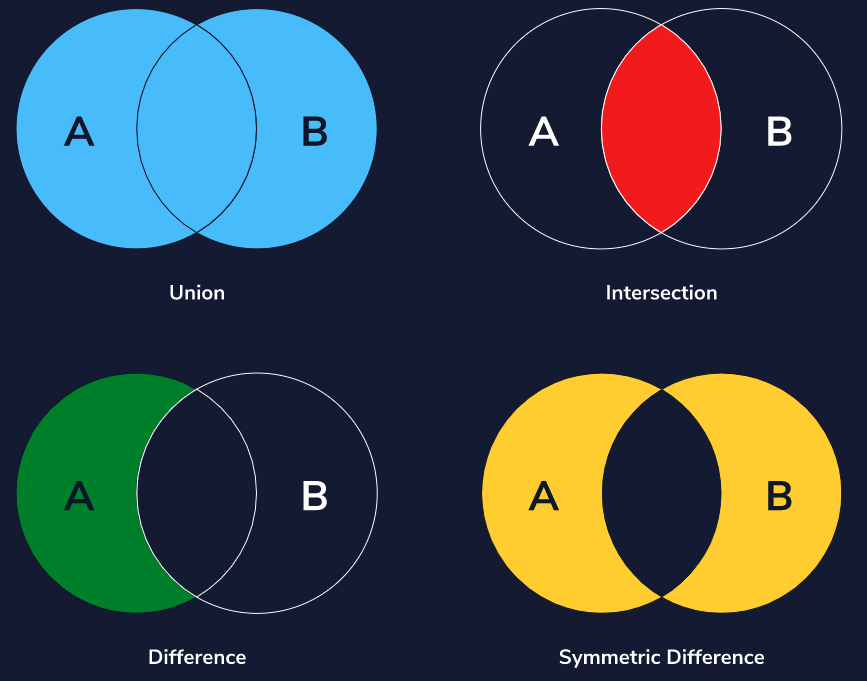

Python 3
Table of contents:
General Terminology
Why python?
Python simple data types
Confusing behavior with float
Data structure
Container
Iterable
Division in Python
Calculations in Python
Literals
Mutables
Context manager
Basic Syntax
type()
Print to console
**
%
+= and -=
format
str()
repr()
hex()
round()
String concatenation
Multi line strings
None
Control Flow Syntax
Relational operators
Boolean operators
Defining boolean variables
If/elif/else statements
Errors
^
SyntaxError
NameError
TypeError
ZeroDivisionError
IndexError
ValueError
IndentationError
KeyError
AttributeError
StopIteration
Lists
Creating a list
List vs. Linked List
Access list elements
Modify list elements
Two-dimensional lists
Slicing
append()
+
list[-1]
remove()
insert()
pop()
range()
len()
count()
sort()
sorted()
zip()
*
Remove duplicates from a list
Pros and cons of lists
Tuples
Tuple
Unpacking a tuple
One element tuples
Pros and cons of tuples
Sets
Set
Duplicate set items
Set comprehension
Frozen set
Find if element exists in set
set()
add()
update()
remove()
discard()
pop()
clear()
del()
Set operations
union()
intersection()
intersection_update()
difference()
difference_update()
symmetric_difference()
Dictionaries
Dictionary
Hash value
Add a key value pair to a dictionary
.update()
Dict comprehensions
Access data in a dictionary
.get()
.pop()
list()
keys()
values()
items()
Pros and cons of dictionaries
Loops
Three steps in a loop
Two types of iteration
Basic for loops
for loops with range
while loops
while loops with lists
Nested loops
Infinite loops
List comprehensions
List comprehensions with conditionals
break
continue
Functions
Two types of Python functions
Functions as first-class-objects
Parameters
Arguments
Defining a function
Returned function value
return
Multiple returns
Lambda function
map()
filter()
reduce()
Nested functions
Returning functions from functions
Three types of arguments
Argument unpacking
*
**
Function call unpacking
Decorating a function
@
*args and **kwargs with decorators
Mutable default arguments
None
Strings
Python string properties
Strings as lists
Slicing a string
String concatenation
len()
Negative indices
\
String iteration
in
replace()
Modules
import
Module definition
Example helpful modules
as
import *
decimals example
Package managers
Reading Files
File path on MacOS
with
open()
readlines()
readline()
“w”
“a”
newline=’’
Convert a read csv file into a dictionary
writeheader() and writerow()
json.load()
json.dump()
Error Handling
Syntax errors vs. runtime errors
Exceptions
__bases__()
raise
try/except
except as
else
finally
Handling multiple exceptions
Basic user-defined exceptions
Custom user-defined exceptions
Warnings
Create a custom warning
Unit Testing
assert
Unit test
Test case
Unit testing frameworks
Namespaces
Name
Namespace
Built-in
Global
Local
Enclosing
Classes
Instantiating a class
Object oriented programming
Attribute
Class
pass
__main__
Class variables
Class methods
self
Dunder methods
__init__()
__repr()__
Instance variables
hasattr()
getattr()
Common data types as objects
dir()
Functions as objects
Object Oriented Programming
Inheritance
Defining a class variable
Overriding methods
super()
Multiple inheritance
Operator overloading
Abstract classes
Access modifiers
Name mangling
Getters, setters, and deleters
Iterables
Iterator object
Iterator protocol
iter()
__iter__()
next()
__next__()
Custom iterators
Create a custom iterator
Itertools
Infinite iterators
Finite iterators
Combinatoric iterators
count()
chain()
combinations()
Generators
Definition
Generator functions
yield
Connecting generators
yield from
Generator pipeline
Generator expressions
Generator expressions vs. list comprehensions
send()
throw()
close()
Sources
General Terminology
Why python?
- Gentle learning curve
- Clean and elegant code
- Rich in open source modules, libraries, and frameworks
Python simple data types
- String
- Int
- Float: a decimal number. For fractions and precise measurements
- Bool: True and False
Confusing behavior with float
Python is often limited by the limitations of floating point hardware. Keep in mind floating point is not decimal arithmetic.
For example, when you have:
>>> 1 / 10
0.1
Due to the way floating point numbers are stored, Python actually is storing:
>>> 0.1
0.1000000000000000055511151231257827021181583404541015625
But it doesn’t print that because that’s unnecessary to most users
As such, you get behavior like this:
>>> .1 + .1 + .1 == .3
False
>>> round(.1, 1) + round(.1, 1) + round(.1, 1) == round(.3, 1)
False # Because Python cannot get any closer to the values of .1
To combat that, the following works:
>>> round(.1 + .1 + .1, 10) == round(.3, 10)
True
Data structure
- A collection of data values, relationships between them, and functions/operations that can be applied to the data.
- 4 built-in iterable data types to store collections:
- List: A collection of data in sequential order
- Ordered and changeable. Allows duplicates
- Dictionaries: Key value pairs
- Ordered (as of Python 3.7) and changeable. No duplicate keys
- Set: A way to store multiple items in a single variable
- Unordered, unchangeable, and unindexed. No duplicates
- Tuple: Immutable collection of data
- Ordered and unchangeable. Allows duplicates
- Lists and dictionaries are the most widely used built in data types
Container
- Any object that stores data in python
- In addition to built-in containers like lists and dictionaries, there are other specialized containers that can be imported from the collections module (see https://quinncoyle.com/notes/python-packages/ for details)
Iterable
- An object that can be looped through element by element
- Build in iteration capability with for loops
Division in Python
- When dividing, Python converts all int’s to floats before dividing
Calculations in Python
- Follows the standard math order of operations
Literals
- The raw data assigned to variables or used during operations on variables
- I.e. “2” and “True” in the below code:
variable = 2
print(variable + 2)
my_bool = True
Mutables
- Containers that are intended to be changed after they are made
- Python examples include: list, sets, dictionaries
- Examples of immutable objects in Python: int, float, tuples, and strings
Context manager
- A way to allocate and release resources when and how you want to
- They automatically release resources (i.e file systems and database connections), therefore allowing for the setup and teardown of them with ease
Basic Syntax
type()
- Get the variable’s data type
bool_one = True
print(type(bool_one)) # <class 'bool'>
Print to console
print ("Hello World!")
**
- Used for exponents, i.e. 253 is:
2**53
%
- Modulo in Python - gives the remainder of a division calculation
- Modulo will be 0 if the number is divisible
+= and -=
- Add/subtract another value to a variable
number_of_miles_hiked = 12
number_of_miles_hiked += 2
print(number_of_miles_hiked) # 14
format
- Round values to specified points
>>> format(math.pi, '.12g') # give 12 significant digits
'3.14159265359'
>>> format(math.pi, '.2f') # give 2 digits after the point
'3.14'
str()
- Convert a value to a string - is best used for output
- It outputs an informal string representation of the object
repr()
- Return a string of a printable representation of an object
- Is best used for debugging and development
- Computes the official string representation of the object - contains all the information
- >>> math.pi
- 3.141592653589793
- >>> repr(math.pi)
- '3.141592653589793'
hex()
- Print out the hex representation of a floating point value
- Note: this doesn’t work for strings and integers
>>> print(3.14159.hex())
0x1.921f9f01b866ep+1
>>> print(float.fromhex('0x1.921f9f01b866ep+1'))
3.14159
round()
- Round a value to a specified number of decimals. Default is 0
x = round(5.76543, 2)
print(x) # 5.77
String concatenation
- In addition to standard + concatenation, some ways to do it are:
print(f"Getting {data} data for {detail}. This is call # {counter}")
print("Bad Response Code: {}".format(r.status_code))
my_string = "Hello world"
my_string += " adding this on!"
print(my_string) # Hello world adding this on!
Multi line strings
- Use “”” - string doesn’t end until the next triple quote
- It can also be used if the string contains a lot of quotation marks
this_is_a_long_string = """
Blah blah blah blah
Hello hello
Yes yes yes
"""
None
Control Flow Syntax
Relational operators
- Equals: ==
- Not equals: !=
- >, >=, <, <=
Boolean operators
- Used to cover multiple relational expressions at once
(1 + 1 == 2) and (2 < 1) # False
(2 < 0) or True # True
not 1 + 1 == 2 # False
if not gpa >= 2.0:
print("Your GPA is not high enough to graduate.")
Defining boolean variables
- Can do it in a couple ways:
bool_one = True
bool_two = 5 != 7
print(bool_two) # True
If/elif/else statements
grade = 86
if grade >= 90:
print("A")
elif grade >= 80:
print("B")
elif grade >= 70:
print("C")
elif grade >= 60:
print("D")
else:
print("F")
Errors
^
- Python will point to the location where the error occurred with this character
File "script.py", line 1
print(Hello world!)
^
SyntaxError: invalid syntax
SyntaxError
- Something wrong with the way the code is written, i.e. bad punctuation, a wrongly placed command, or missing parentheses
NameError
- When the Python interpreter sees something wrong. For example, using a variable that was never initialized
TypeError
- When an operation is applied to an object with the wrong type
- Example: TypeError: 'CustomInventory' object is not iterable
ZeroDivisionError
- Error that occurs when Python tries to divide by 0
IndexError
- When index of selected data type (i.e. a List) is out of range
ValueError
- When a value is not present, i.e. trying to .remove() a value that doesn’t exist from a list
IndentationError
- When you forget to indent
- This also occurs if you define an empty class
KeyError
- Trying to get a key that doesn’t exist from a dictionary
AttributeError
- If attempting to access an Class attribute that does not exist
StopIteration
- In exception raised by an iterator’s __next__() method when all items are finished iterating
- It’s how loops know to stop
- It gets thrown in the below example:
sku_list = [7046538, 8289407, 9056375, 2308597]
sku_iterator = iter(sku_list)
for i in range(5):
next_sku = next(sku_iterator)
print(next_sku) # 7046538, 8289407, 9056375, 2308597, StopIteration error
Lists
Creating a list
- Lists can contain any data type in Python
- Note: it’s best practice to insert a space after each item
heights = [61, 70, 67, 64]
names = ["Noelle", "Ava", "Sam", "Mia"]
mixed_list_common = ["Mia", 27, False, 0.5]
empty_list = []
List vs. Linked List
- LinkedLists have less cost when adding/removing items in the middle of a list. List can only cheaply add/remove at the end of the list
- LinkedList is more like a chain
Access list elements
- Note: you must use an int index
calls = ["Juan", "Zofia", "Amare", "Ezio", "Ananya"]
print(calls[2]) # Amare
Modify list elements
- Use a list index or negative index to update a value in your list
garden = ["Tomatoes", "Green Beans", "Cauliflower", "Grapes"]
garden[2] = "Strawberries"
print(garden) # ['Tomatoes', 'Green Beans', 'Strawberries', 'Grapes']
Two-dimensional lists
- Usually a good way to represent grids
- Example:
heights = [["Noelle", 61], ["Ava", 70], ["Sam", 67], ["Mia", 64]]
heights = [["Noelle", 61], ["Ava", 70], ["Sam", 67], ["Mia", 64]]
print(heights[1][0]) # Ava
class_name_hobbies = [["Jenny", "Breakdancing"], ["Alexus", "Photography"], ["Grace", "Soccer"]]
class_name_hobbies[0][1] = "Meditation"
print(class_name_hobbies) # [["Jenny", "Meditation"], ["Alexus", "Photography"], ["Grace", "Soccer"]]
Slicing
- When you want to extract a portion of a list
- To slice a range, use the following syntax: letters[start:end]
- The end of the slide is one more than the last index we want
letters = ["a", "b", "c", "d", "e", "f", "g"]
sliced_list = letters[1:5]
print(sliced_list) # ['b', 'c', 'd', 'e']
fruits = ["apple", "cherry", "pineapple", "orange", "mango"]
print(fruits[:3]) # ['apple', 'cherry', 'pineapple']
fruits = ["apple", "cherry", "pineapple", "orange", "mango"]
print(fruits[2:]) # ['pineapple', 'orange', 'mango']
fruits = ["apple", "cherry", "pineapple", "orange", "mango"]
print(fruits[-2:]) # ['orange', 'mango']
- All but the last n elements:
fruits = ["apple", "cherry", "pineapple", "orange", "mango"]
print(fruits[:-2]) # ['apple', 'cherry', 'pineapple']
append()
garden = []
garden.append("Tomatoes")
print(garden) # ['Tomatoes']
+
- Concatenate lists: append multiple items to a list
- Note: you can only concatenate other lists. Not raw strings or integers. You need to put those raw strings or integers into their own list
items_sold = ["cake", "cookie", "bread"]
items_sold_new = items_sold + ["biscuit", "tart"]
print(items_sold_new) # ['cake', 'cookie', 'bread', 'biscuit', 'tart']
list[-1]
- Select the last element of a list
pancake_recipe = ["eggs", "flour", "butter", "milk", "sugar", "love"]
print(pancake_recipe[-1]) # love
remove()
- Remove specific elements from a list
shopping_line = ["Cole", "Kip", "Chris", "Sylvana"]
shopping_line.remove("Chris")
print(shopping_line) # ['Cole', 'Kip', 'Sylvana']
- Note: if there are duplicate elements, it only removes the first one
shopping_line = ["Cole", "Kip", "Chris", "Sylvana", "Chris"]
shopping_line.remove("Chris")
print(shopping_line) # ["Cole", "Kip", "Sylvana", "Chris"]
insert()
- Built in list method that lets you add an element to a specific index in the list
store_line = ["Karla", "Maxium", "Martim", "Isabella"]
store_line.insert(2, "Vikor")
print(store_line) # ['Karla', 'Maxium', 'Vikor', 'Martim', 'Isabella']
- You must provide both arguments:
store_line = ["Karla", "Maxium", "Martim", "Isabella"]
store_line.insert("Vikor")
print(store_line) # TypeError: insert expected 2 arguments, got 1
pop()
- Remove an element from a specific index
- If no index is provided, the last element is removed
- It’s the opposite of insert()
- Pop also returns the value that gets removed
- Examples:
cs_topics = ["Python", "Data Structures", "Balloon Making", "Algorithms", "Clowns 101"]
removed_element = cs_topics.pop()
print(cs_topics) # ['Python', 'Data Structures', 'Balloon Making', 'Algorithms']
print(removed_element) # Clowns 101
cs_topics = ["Python", "Data Structures", "Balloon Making", "Algorithms", "Clowns 101"]
cs_topics.pop(1)
print(cs_topics) # ['Python', 'Balloon Making', 'Algorithms', 'Clowns 101']
range()
- Make a list of consecutive numbers
- It creates a range object that needs to be converted to a list first using list()
my_range = range(10)
print(my_range) # range(0, 10)
print(list(my_range)) # [0, 1, 2, 3, 4, 5, 6, 7, 8, 9]
- You can also define where to start it
my_list = range(2, 9)
print(list(my_list)) # [2, 3, 4, 5, 6, 7, 8]
- You can also define how much to increment
my_list_1 = range(2, 18, 4)
print(list(my_list_1)) # [2, 6, 10, 14]
my_list_2 = range(1, 100, 10)
print(list(my_list_2)) # [1, 11, 21, 31, 41, 51, 61, 71, 81, 91]
len()
my_list = [1, 2, 3, 4, 5]
print(len(my_list)) # 5
count()
- Count the occurrences of a particular item in a list
letters = ["m", "i", "s", "s", "i", "s", "s", "i", "p", "p", "i"]
num_i = letters.count("i")
print(num_i) # 4
sort()
- Sort a list in numerical or alphabetical order
names = ["Xander", "Buffy", "Angel", "Willow", "Giles"]
names.sort()
print(names) # ['Angel', 'Buffy', 'Giles', 'Willow', 'Xander']
names = ["Xander", "Buffy", "Angel", "Willow", "Giles"]
names.sort(reverse = True)
print(names) # ['Xander', 'Willow', 'Giles', 'Buffy', 'Angel']
- Note: the method does not return any value. It modifies the list directly
sorted()
- Like sort(), but it’s a built in Python function (instead of a list method) that generates a new list rather than modifying the current one
names = ["Xander", "Buffy", "Angel", "Willow", "Giles"]
sorted_names = sorted(names)
print(names) # ['Xander', 'Buffy', 'Angel', 'Willow', 'Giles']
print(sorted_names) # ['Angel', 'Buffy', 'Giles', 'Willow', 'Xander']
zip()
- Takes two or more lists as inputs and returns an object of a list of tuple pairs, with each pair containing an element from each input
- Note that the inner lists get converted into tuples
names = ["Jenny", "Alexus", "Sam", "Grace"]
heights = [61, 70, 67, 65]
rsvp = [True, False, False, True]
names_heights_rsvp = zip(names, heights, rsvp)
print(names_heights_rsvp) #<zip object at 0x10c8ad580>
print(list(names_heights_rsvp)) # [('Jenny', 61, True), ('Alexus', 70, False), ('Sam', 67, False), ('Grace', 65, True)]
*
- Unpack operator: expand out a list
new_months_data = [
{'jan_profit': 13977.85, 'jan_holiday_profit': 2176.43},
{'feb_profit': 16692.15, 'feb_holiday_profit': 3239.74},
{'mar_profit': 17524.35, 'mar_holiday_profit': 4301.92}
]
print(*new_months_data)
# {'jan_profit': 13977.85, 'jan_holiday_profit': 2176.43} {'feb_profit': 16692.15, 'feb_holiday_profit': 3239.74} {'mar_profit': 17524.35, 'mar_holiday_profit': 4301.92}
Remove duplicates from a list
- A quick way to do this is make use of sets:
my_list = ['t-shirt', 'jeans', 'jeans', 't-shirt', 'shoes']
removed_duplicates = list(set(my_list))
print(removed_duplicates) # ['shoes', 'jeans', 't-shirt']
Pros and cons of lists
- Great at accessing data at any index you want
- Not optimized for appending and popping (adding to front and back) large amounts of data. Solve this using collections.deque
- Can be cumbersome to store big lists of other data structures like dictionaries - first you have to access the element in the list by its index
- Can get around this using collections.OrderedDict
Tuples
Tuple
- A data structure that lets us store multiple pieces of data inside it
- It’s similar to a list except that it’s immutable: once you create it the elements, order of the elements, and how many elements there are cannot be changed
- More memory efficient than lists
- Are used and accessed similarly to what we do for lists
my_info = ("Quinn", 24, "Engineer") # This is a tuple
print(my_info) # ('Quinn', 24, 'Engineer')
print(my_info[0]) # Quinn
my_info[0] = "Bob" # TypeError: 'tuple' object does not support item assignment
Unpacking a tuple
- A way to create variables directly from tuples
- Note that the order matters
- The number of variables being assigned must be equal to the size of the tuple
my_info = ("Quinn", 24, "Engineer") # This is a tuple
name, age, occupation = my_info
print(name) # Quinn
print(occupation) # Engineer
One element tuples
- Note that a tuple with one element does not create a tuple. This is because Python doesn’t know if the parentheses are being used for mathematical operations
one_element_tuple = (4)
print(one_element_tuple) # 4
print(type(one_element_tuple)) # <class 'int'>
- To create one, you have to put a trailing comma after the first value:
one_element_tuple = (4,)
print(one_element_tuple) # (4,)
print(type(one_element_tuple)) # <class 'tuple'>
Pros and cons of tuples
- Great for storing data that’s meant to be together but isn’t necessarily similar
- I.e. information about me in the above example, but it’s not like its a list of occupations or names. Hence not making it a list
- Great for grouping data that doesn’t need to be modified in the future
- I.e. information about a person that’s not going to change - SSN, Birthdate, Birth city, etc.
- It can be confusing to represent properties using numerical indices. For example the below is confusing:
actor_data_tuple = ('Leonardo DiCaprio', 1974, 'Titanic', 1997)
actor_data_tuple[3]
- Use collections.namedtuple to overcome this and have self documented elements
Sets
Set
- A structure that stores multiple items in a single variable
- It’s unordered (can appear in a different order every time they’re used), unchangeable (However you can remove items and add new ones), and unindexed
- Duplicates are not allowed
- Can contain simple data types but not collections
- There are a variety of methods (including database-style joining) for sets that can be found in the documentation
- Example:
myset = {"apple", "banana", "cherry"}
print(myset) # {'apple', 'banana', 'cherry'}
for item in myset:
print(item) # Prints out each item
Duplicate set items
- Adding a duplicate does not error. Instead the set only holds one item
- Example:
myset = {"apple", "banana", "banana"}
print(myset) # {'apple', 'banana'}
Set comprehension
- Like List comprehensions, we can create sets using a prior dataset (i.e. a list or another set)
- Example, which works the same if items is a set
items = ['country', 'punk', 'rap', 'techno', 'pop', 'latin']
music_genres = {category for category in items if category[0] == 'p'}
print(music_genres) # {'pop', 'punk'}
Frozen set
- A set in which the elements inside of it cannot be modified
- add() and update() do not work on frozen sets
- Contents in a frozen set are unordered just like with regular sets
- Created using frozenset():
frozen_music_genres = frozenset(['country', 'punk', 'rap', 'techno', 'pop', 'latin'])
empty_frozen_music_genres = frozenset()
Find if element exists in set
- Use the in keyword
- Works for frozen set too
song_tags = {'guitar', 'acoustic', 'folk', 'country', 'live', 'blues'}
print('country' in song_tags) # True
print('aaaa' in song_tags) # False
set()
- Create an empty set or a set from a list
- Note: a set from a list with duplicates is processed with duplicates removed
my_set = set(['country', 'punk', 'rap', 'techno', 'pop', 'latin', 'rap'])
print(my_set) # {'rap', 'punk', 'country', 'latin', 'techno', 'pop'}
empty_set = set()
print(empty_set) # set()
add()
- Add one item to a set
- Will not add a duplicate item to a set (update() won’t either)
- Example:
thisset = {"apple", "banana", "cherry"}
thisset.add("orange")
print(thisset) # {'apple', 'orange', 'cherry', 'banana'}
update()
- Add items from another set into a set
- Note that it also works with any other iterable object. Tuples, lists, or dictionaries.
- Example with another set:
thisset = {"apple", "banana", "cherry"}
tropical = {"pineapple", "mango", "papaya"}
thisset.update(tropical)
print(thisset) # {'apple', 'pineapple', 'papaya', 'mango', 'cherry', 'banana'}
- Example with another iterable:
thisset = {"apple", "banana", "cherry"}
mylist = ["kiwi", "orange"]
thisset.update(mylist)
print(thisset) # {'orange', 'kiwi', 'banana', 'apple', 'cherry'}
remove()
- Remove a single item for a set
- Will raise an error if item does not exist
- Example:
thisset = {"apple", "banana", "cherry"}
thisset.remove("banana")
print(thisset) # {'cherry', 'apple'}
discard()
- Does the same thing as remove(), except it does NOT raise an error if the item doesn’t exist
thisset = {"apple", "banana", "cherry"}
thisset.discard("orange")
print(thisset) # {'banana', 'cherry', 'apple'}
pop()
- Removes the last item from a set. However since sets are unordered, you won’t know what gets removed
- It returns the removed item as well
- Example:
thisset = {"apple", "banana", "cherry"}
x = thisset.pop()
print(x) # banana
print(thisset) # {'cherry', 'apple'}
clear()
thisset = {"apple", "banana", "cherry"}
thisset.clear()
print(thisset) # set()
del()
- Deletes the set from memory
- Example:
thisset = {"apple", "banana", "cherry"}
del thisset
print(thisset) # NameError: name 'thisset' is not defined
Set operations
- The ability to combine sets, find differences and intersections, find symmetric differences, and do complex logic on multiple sets
- One of the primary reasons we use sets
- Common uses: filtering, categorizing, and combining
[a]
union()
- Returns a new set containing all the elements from both sets without duplicates
- Note: can also use the | operator
- Example:
prepare_to_py = {'rock', 'heavy metal', 'electric guitar', 'synth'}
py_and_dry = frozenset({'classic', 'rock', 'electric guitar', 'rock and roll'})
# .union()
combined_tags = prepare_to_py.union(py_and_dry)
print(combined_tags) # {'heavy metal', 'classic', 'rock and roll', 'electric guitar', 'rock', 'synth'}
# Using the | operator
frozen_combined_tags = py_and_dry | prepare_to_py
print(frozen_combined_tags) # frozenset({'classic', 'rock and roll', 'heavy metal', 'electric guitar', 'rock', 'synth'})
intersection()
- Returns a new set (or frozen set) with the elements that both sets have in common
- Note: can also use the & operator
prepare_to_py = {'rock', 'heavy metal', 'electric guitar', 'synth'}
py_and_dry = frozenset({'classic', 'rock', 'electric guitar', 'rock and roll'})
frozen_intersected_tags = py_and_dry.intersection(prepare_to_py)
print(frozen_intersected_tags) # frozenset({'rock', 'electric guitar'})
unfrozen_intersected_tags = prepare_to_py & py_and_dry
print(unfrozen_intersected_tags) # {'rock', 'electric guitar'}
intersection_update()
- Intersection, but instead of returning a new set the original set is updated to have the result of the intersection
difference()
- Returns a set or frozen set that contains only the elements from the first set not found in the second set
- Note: can also use the - operator
- Example
prepare_to_py = {'rock', 'heavy metal', 'electric guitar', 'synth'}
py_and_dry = frozenset({'classic', 'rock', 'electric guitar', 'rock and roll'})
# Find the elements which are only in prepare_to_py
unfrozen_genres = prepare_to_py.difference(py_and_dry)
print(unfrozen_genres) # {'synth', 'heavy metal'}
frozen_genres = py_and_dry - prepare_to_py
print(frozen_genres) # frozenset({'rock and roll', 'classic'})
difference_update()
- Difference, but instead of returning a new set the original set is updated to have the result of the difference
symmetric_difference()
- The opposite of the intersection: includes all elements from sets which are in either but not both of them
- Example use case: see what interests are unique between you and a friend on LinkedIn
- Note: can use the ^ operator
prepare_to_py = {'rock', 'heavy metal', 'electric guitar', 'synth'}
py_and_dry = frozenset({'classic', 'rock', 'electric guitar', 'rock and roll'})
unfrozen_set = prepare_to_py.symmetric_difference(py_and_dry)
print(unfrozen_set) # {'heavy metal', 'classic', 'synth', 'rock and roll'}
frozen_set = py_and_dry ^ prepare_to_py # frozenset({'heavy metal', 'synth', 'classic', 'rock and roll'})
print(frozen_set)
Dictionaries
Dictionary
- An unordered set of key value pairs in order to map pieces of data to each other
- Empty dictionaries can also be created (empty_dictionary = {})
- Each key must be unique; using the same key again will overwrite the previous value
menu = {"avocado toast": 6, "carrot juice": 5, "blueberry muffin": 2}
print(menu) # {'avocado toast': 6, 'carrot juice': 5, 'blueberry muffin': 2}
- Keys can be numbers or strings; values can be of any type (including lists or dictionaries)
- Note that keys cannot be lists or dictionaries
students_in_classes = {"software design": ["Aaron", "Delila", "Samson"], "cartography": ["Christopher", "Juan", "Marco"], "philosophy": ["Frederica", "Manuel"]}
- Keys and values types can also be mixed and matched
person = {"name": "Shuri", "age": 18, "family": ["T'Chaka", "Ramonda"]}
Hash value
- A specific identifier for each key
- Dictionaries in Python rely on having a hash value
- As a result, dictionary keys must be immutable hashable data types and thus can’t be dictionaries or lists
Add a key value pair to a dictionary
dictionary[key] = value
- This also overwrites values
.update()
- Add multiple key value pairs to a dictionary
sensors = {"living room": 21}
sensors.update({"pantry": 22, "guest room": 25})
print(sensors) # {'living room': 21, 'pantry': 22, 'guest room': 25}
Dict comprehensions
- Create a dictionary from two equal-length lists:
names = ['Jenny', 'Alexus', 'Sam', 'Grace']
heights = [61, 70, 67, 64]
students = {key:value for key, value in zip(names, heights)}
print(students) # {'Jenny': 61, 'Alexus': 70, 'Sam': 67, 'Grace': 64}
Access data in a dictionary
building_heights = {"Burj Khalifa": 828, "Shanghai Tower": 632, "Abraj Al Bait": 601, "Ping An": 599, "Lotte World Tower": 554.5, "One World Trade": 541.3}
print(building_heights["Burj Khalifa"]) # 828
.get()
- A way to search for a value inside a dictionary. If the key you’re trying to get doesn’t exist, None is returned
building_heights = {"Burj Khalifa": 828, "Shanghai Tower": 632, "One World Trade": 541.3}
print(building_heights.get("Shanghai Tower")) # 632
print(building_heights.get("My House")) # None
# With a default value:
print(building_heights.get("My House", 0)) # 0
.pop()
- Remove an item from a dictionary when you know the key
raffle = {223842: "Teddy Bear", 872921: "Concert Tickets", 320291: "Gift Basket"}
print(raffle.pop(320291, "No Prize")) # No Prize is the default value
print(raffle) # {223842: 'Teddy Bear', 872921: 'Concert Tickets'}
list()
- Get all keys of a dictionary
test_scores = {"Grace":[80, 72, 90], "Jeffrey":[88, 68, 81], "Pedro":[98, 96, 95]}
print(list(test_scores)) # ['Grace', 'Jeffrey', 'Pedro']
keys()
- A dictionary method that returns a dict_keys object - it’s a view object that gives a read-only look at the current state of the dictionary. It provides all the keys
- The dict_keys object can be used in place of a list to do iteration
test_scores = {"Grace":[80, 72, 90], "Jeffrey":[88, 68, 81], "Pedro":[98, 96, 95]}
print(test_scores.keys()) # dict_keys(['Grace', 'Jeffrey', 'Pedro'])
for student in test_scores.keys():
print(student)
# Grace
# Jeffrey
# Pedro
values()
- A dictionary method that returns a dict_values object of all values in a dictionary
- You can then iterate over this object like you would with dict_keys
test_scores = {"Grace":[80, 72, 90], "Jeffrey":[88, 68, 81], "Pedro":[98, 96, 95]}
print(test_scores.values()) # dict_values([[80, 72, 90], [88, 68, 81], [98, 96, 95]])
for score_list in test_scores.values():
print(score_list)
# [80, 72, 90]
# [88, 68, 81]
# [98, 96, 95]
items()
- Get both keys and values of a dictionary
- It returns a dict_list object, with each element of the list as a tuple of: (key, value)
- Example:
biggest_brands = {"Apple": 184, "Google": 141.7, "Microsoft": 80, "Coca-Cola": 69.7, "Amazon": 64.8}
for company, value in biggest_brands.items():
print(company + " has a value of " + str(value) + " billion dollars. ")
Pros and cons of dictionaries
- It’s hard to handle missing keys - a KeyError gets thrown. This can be cumbersome and not clean to manage
- This can be overcome with collections.defaultdict
- In python versions < 3.6, dictionaries are unordered
- This can be overcome with collections.OrderedDict
Loops
Three steps in a loop
- Initialization: starting it up
- Repetition: looping
- End condition: when to stop looping
Two types of iteration
- Indefinite iteration: Number of times the loop is executed depends on how many times a condition is met
- Definite iteration: Number of times the loop executed is defined in advanced, i.e. based on the length of a collection
Basic for loops
- A definite iteration where we know in advance how many times the loop will iterate
- Note: try to make your temporary variable as descriptive as possible for easier code readability
- I.e. using ingredient instead of i below
for <temporary variable> in <collection>:
<action>
ingredients = ["milk", "sugar", "vanilla extract", "dough", "chocolate"]
for ingredient in ingredients:
print(ingredient)
- Elegant example in one line:
- Use these for simple programs. For any loop with multiple complex action on each iteration, use multi line loops
ingredients = ["milk", "sugar", "vanilla extract", "dough", "chocolate"]
for ingredient in ingredients: print(ingredient)
for loops with range
- When you want to perform a specific action multiple times instead of iterating through a specific collection
for counter in range(6):
print("This will print 6 times")
print(counter) # 0, 1, ... 5. Note it's not required to call this temporary variable
while loops
- A type of indefinite iteration that keeps going as long as a given condition is true
- Pattern for while loops:
while <conditional statement>:
<action>
counter = 0
while counter <= 3:
print(counter)
counter += 1
# Prints 0, 1, 2, 3
- Elegant one line example, same result as above:
counter = 0
while counter <= 3: print(counter); counter += 1
while loops with lists
- In addition to the for loop example above, you can also use while loops with lists
- Since lists have a predetermined length, we can use that as the condition for how long to run the while loop
- Example:
ingredients = ["milk", "sugar", "vanilla extract", "dough", "chocolate"]
length = len(ingredients)
index = 0
while index < length:
print(ingredients[index])
index += 1
Nested loops
project_teams = [["Ava", "Samantha", "James"], ["Lucille", "Zed"], ["Edgar", "Gabriel"]]
for team in project_teams:
for name in team:
print(name) # Prints out all eight names
Infinite loops
- A loop that never terminates. They run forever and consume all computer resources
List comprehensions
- A way to write elegant loops over lists in one line using the following format:
new_list = [<expression> for <element> in <collection>]
numbers = [2, -1, 79, 33, -45]
doubled = [num * 2 for num in numbers]
print(doubled) # [4, -2, 158, 66, -90]
- Takes in an element from the list numbers and assigns it to the variable num
- Applies the <expression> to each num and adds it to a new list, doubled
- Repeats these steps for every element in numbers (the <collection>)
- Note that this is the equivalent of the below code, only much more concise:
numbers = [2, -1, 79, 33, -45]
doubled = []
for number in numbers:
doubled.append(number * 2)
print(doubled)
List comprehensions with conditionals
- Add conditional logic to clean list comprehensions
- Note that the syntax is different when you do and don’t use else
- Without else
heights = [161, 164, 156, 144, 158, 170, 163, 163, 157]
can_ride_coaster = [num for num in heights if num > 161]
print(can_ride_coaster) # [164, 170, 163, 163]
numbers = [2, -1, 79, 33, -45]
doubled_tripled = [num * 2 if num < 0 else num * 3 for num in numbers ]
print(doubled_tripled) # [6, -2, 237, 99, -90]
break
- A loop control statement that terminates a loop
- Helpful to use if a condition is met. Example:
items_on_sale = ["blue shirt", "striped socks", "knit dress", "red headband", "dinosaur onesie"]
print("Checking the sale list!")
for item in items_on_sale:
print(item)
if item == "knit dress":
break
print("End of search!")
continue
- Skip the current iteration of the loop and move onto the next one
- When a loop encounters continue, it immediately skips all what’s left of the current iteration
- Example: print all numbers in a list but only if they are positive integers
big_number_list = [1, 2, -1, 4, -5, 5, 2, -9]
for i in big_number_list:
if i <= 0:
continue
print(i)
Functions
Two types of Python functions
- User defined functions (we create them using def)
- Built-in functions: print, str, len, etc.
Functions as first-class-objects
- As first class objects in python, functions have four important characteristics. They:
- Can be stored as variables
- Can be passed as arguments to a function
- Can be returned by a function
- Can be stored in data structures (i.e. lists and dictionaries)
- Also known as first-class-citizens or first-class-functions
Parameters
- Data accepted by a function as an input value
Arguments
- Value passed into the function when it’s called (“Hello world!” below)
function_name("Hello world!") # My function Hello world!
Defining a function
def function_name():
print("My function")
function_name() # My function
- With a parameter and called with an argument
def function_name(statement):
print(f"My function {statement}")
function_name("Hello world!") # My function Hello world!
- You can use as many parameters as desired
Returned function value
- What’s returned by a function if using return
return
- Optional keyword to have a function return a value when its executed
- This is helpful for working with multiple functions
def deduct_expense(budget, expense):
return (budget-expense)
print(deduct_expense(10, 2)) # 8
Multiple returns
- You can return multiple values separated by commas, and then define those values by calling the function while also using commas:
weather_data = ['Sunny', 'Sunny', 'Cloudy', 'Raining', 'Snowing']
def threeday_weather_report(weather):
first_day = " Tomorrow the weather will be " + weather[0]
second_day = " The following day it will be " + weather[1]
third_day = " Two days from now it will be " + weather[2]
return first_day, second_day, third_day
monday, tuesday, wednesday = threeday_weather_report(weather_data)
print(monday)
print(tuesday)
print(wednesday)
Lambda function
- One-line shorthand for a function
- Also called an anonymous function
- Example: the above two functions are equivalent
def add_two(my_input):
return my_input + 2
add_two = lambda my_input: my_input + 2
- Example: With control flow
check_if_A_grade = lambda grade: 'Got an A!' if grade >= 90 else 'Did not get an A.'
map()
- A built-in higher order function that applies the passed function to each element in the iterable. It then returns a map object holding all of the resulting mapping function values
- The resulting map is usually converted into a list
- Example:
my_function = lambda my_input: my_input * 14
map_result = map(my_function, [3,6,8])
print(map_result) # <map object at 0x10fb537c0>
print(list(map_result)) # [42, 84, 112]
filter()
- Similar to map(), but the filtering function should be a function that only returns a True or False boolean value. If the result is true, the item is added to the resulting filter object
- Example:
names = ["margarita", "Linda", "Masako", "Maki", "Angela"]
M_names = filter(lambda name: name[0] == "M" or name[0] == "m", names)
print(list(M_names)) # ['margarita', 'Masako', 'Maki']
reduce()
- It repeatedly applies a passed function to each sequential pairs of elements in an iterable and then returns a single value
- Note: it must be imported from functools to be used
- For example, to multiply all elements in an iterable together:
from functools import reduce
my_function = lambda x,y: x*y
filter_result = reduce(my_function, [3,6,8])
print(filter_result) # 144
Nested functions
- We can define functions within functions. They only exist in the parent function’s scope
Returning functions from functions
- Python allows nested functions to be returned by the parent function
- For example:
def get_math_function(operation):
def add(n1, n2):
return n1 + n2
def sub(n1, n2):
return n1 - n2
if operation == "+":
return add
elif operation == "-":
return sub
math_function = get_math_function("+")
print(math_function(5,10)) # 15
Three types of arguments
- Positional arguments: called by their position in the function definition
calculate_taxi_price(100, 10, 5)
- Keyword arguments: called by their name
calculate_taxi_price(rate=0.5, discount=10, miles_to_travel=100)
- Default arguments: given default values
def calculate_taxi_price(miles_to_travel, rate, discount = 10):
print(miles_to_travel * rate - discount )
# Using the default value
calculate_taxi_price(10, 0.5)
Argument unpacking
- Process of giving a function a variable number of arguments and then working with them
- Can be done for both positional arguments (using *) and keyword arguments (using **)
- Note the function definition must go by the following order of operations:
- Standard positional arguments
- *args
- Standard keyword arguments
- **kwargs
*
- The unpacking operator: lets us give functions a variable number of positional arguments
- It stores the arguments passed into a function in the form of a tuple
- For example, printing out a variable number of arguments with *args. Note that the variable name args is arbitrary. It can be anything
- Example:
def my_function(*args):
print(args)
my_function('Arg1', 245, False) # ('Arg1', 245, False)
def shout_strings(*args):
for argument in args:
print(argument.upper())
shout_strings("Hello", "world", "this", "is", "cool")
# Prints out each word upper case on a new line
**
- Unpacking operator to accept an unlimited amount of keyword arguments
- For example, using **kwargs. Again kwargs is an arbitrary variable
- It takes in a dictionary with keys and values passed into the kwargs object. Within our function we can then use standard built-in dictionary functions (i.e. get(), values())
- Example:
def arbitrary_keyword_args(**kwargs):
print(type(kwargs)) # <class 'dict'>
print(kwargs) # {'this_arg': 'taylor', 'this_next_arg': 'swift'}
print(kwargs.get("this_next_arg")) # swift
arbitrary_keyword_args(this_arg="taylor", this_next_arg="swift")
- Example to iterate through dictionary:
def print_data(**data):
for arg in data.values():
print(arg)
print_data(a='arg1', b=True, c=100)
# arg1
# True
# 100
Function call unpacking
- We can also use the unpacking operators (* and **) to pass in the individual contents of a list into a function call
- This is super helpful to avoid writing loops
- Example with a list:
my_num_list = [3, 6, 9]
def sum(num1, num2, num3):
print(num1 + num2 + num3)
sum(*my_num_list) # 18
- Example with a dictionary: ** passes in the values
numbers = {'num1': 3, 'num2': 6, 'num3': 9}
def sum(num1, num2, num3):
print(num1 + num2 + num3)
sum(**numbers) # 18
- There are a bunch of other nice use cases of these operators that can be found in documentation
Decorating a function
- Decorators: Special functions that can add functionality to existing function, making for programs that are easier to read and write
- Its a separate function from your original function that returns the existing function that got passed in along with some new functionality
- You can apply a decorator function to different functions called in as the argument
- Note: often decorators are totally abstracted from you by other packages. Then you just have to worry about adding the @
- Example:
def title_decorator(print_name_function):
def wrapper():
print("Ambassador:")
print_name_function()
return wrapper
def print_my_name():
print("Quinn")
def print_joes_name():
print("Joe")
decorated_function = title_decorator(print_my_name)
decorated_function() # Ambassador:
# Quinn
title_decorator(print_joes_name)() # Ambassador:
# Joe
@
- Simplified syntax for decorating a function
- If you decorate above a function with a @, then it will automatically be decorated with the specified decorator when called
def title_decorator(print_name_function):
def wrapper():
print("Ambassador:")
print_name_function()
return wrapper
@title_decorator
def print_my_name():
print("Quinn")
def print_joes_name():
print("Joe")
print_my_name() # Ambassador:
# Quinn
print_joes_name() # Joe
# If print_joes_name() was decorated by @title_decorator, then it would print Ambassador: before it
*args and **kwargs with decorators
- If you want your original function to take in parameters via a decorator, the wrapper in the decorator needs to take in these arguments and then pass them to the function
- Example:
def title_decorator(print_name_function):
def wrapper(*args, **kwargs):
print("Ambassador:")
print_name_function(*args, **kwargs)
return wrapper
@title_decorator
def print_my_name(name, age):
print(name + str(age))
print_my_name("Quinn", 100) # Ambassador:
# Quinn100
Mutable default arguments
- If a function has a mutable default argument (i.e. a list) and is called multiple times, that mutable container is only created once and that same spot in memory will keep getting modified
- This is a quirk worth knowing about in Python
- Example: The result is not what we expect
def update_order(new_item, current_order=[]):
current_order.append(new_item)
return current_order
order1 = update_order({'item': 'burger', 'cost': '3.50'})
order2 = update_order({'item': 'soda', 'cost': '1.50'})
print(order2) # [{'item': 'burger', 'cost': '3.50'}, {'item': 'soda', 'cost': '1.50'}]
None
- A workaround to add mutable default arguments
- It’s commonly used, even though a bit cumbersome to add an if statement
- Example:
def createStudent(name, age, grades=None):
if grades is None:
grades = []
return {
'name': name,
'age': age,
'grades': grades
}
Strings
Python string properties
- Strings are immutable. We cannot modify values in them like we can in lists
- You have to re-initialize the string to modify it
Strings as lists
- A string can be thought of as a list of characters with index starting at 0:
favorite_fruit = "blueberry"
print(favorite_fruit[1]) # l
Slicing a string
- Just like lists, strings can be sliced:
string[first_index:last_index]
my_string = "quinn"
print(my_string[1:4]) # uin
String concatenation
fruit_prefix = "blue"
fruit_suffix = "berries"
print(fruit_prefix + fruit_suffix)
len()
- Number of characters in a string
- Note that spaces are counted as well
favorite_fruit = "blueberry"
print(len(favorite_fruit)) # 9
- It’s a way to slice characters from the end of string:
favorite_fruit = "blueberry"
print(favorite_fruit[len(favorite_fruit)-4:len(favorite_fruit)]) # erry
- Although negative indices are preferred
Negative indices
- Used to get values off the end of a string
- For example, to get the last 5 characters:
my_string = "Hello World"
print(my_string[-5:]) # World
\
- Python escape character
- Example:
favorite_fruit_conversation = "He said, \"blueberries are my favorite!\""
print(favorite_fruit_conversation)
String iteration
- for letter in "Hello World":
- print(letter) # Prints each letter sequentially in terminal
in
- Checks if a string is part of another string
print("e" in "blueberry") # True
print("a" in "blueberry") # False
print("blue" in "blueberry") # True
print("blue" in "strawberry") # False
replace()
- Replace part of a string with another:
text = "I like bananas"
x = text.replace("bananas", "apples")
print(x) # I like apples
Modules
See https://quinncoyle.com/notes/python-packages/ for package-specific notes
import
- Standard way to import a module
- It’s also the way to give files access to other files, since files are modules
- Note: modules usually provide functions/data types to solve a general problem, giving us more time to build software to solve a specific novel problem
- Syntax for importing an object:
from matplotlib import pyplot as plt
- Note: pylot is a function
Module definition
- Python files and sets of files
- Note: package is a directory that holds a collection of modules
- To import one:
from module_name import object_name
- You should only import what you need. Often a library contains a lot of code that you don’t need, which can slow things down or conflict with existing code
Example helpful modules
- datetime: get today’s date/time and other features
from datetime import datetime
- random: generate random numbers/items
- matplotlib: make plots
- decimals: A module that performs decimal arithmetic more accurately
as
- Create a module namespace: you can name the module you’re importing to be anything you want:
import module_name as name_you_pick_for_the_module
- This is helpful when the module’s name conflicts with an existing object
- It can also be helpful for not needing to type out the module name each time
import *
- Wildcard that imports everything
- Note that this syntax is dangerous because it can pollute our local namespace, leading to errors that are hard to debug
decimals example
- Because floating point arithmetic in Python needs to be rounded, you can use this module instead to return proper values:
Package managers
- Ways to install any modules available on the python package index
- conda and pip3 are the most common package managers
Reading Files
File path on MacOS
- From root: "/Users/qtcoyle/Downloads"
- From current directory: "files/example.xml"
- I.e. the files directory is within the current directory where .py file is located
with
- This allows invoking context managers including concurrent.futures.ThreadPoolExecutor or open(). It also handles closing it after use
- Example:
with open('my_text.txt') as text_file:
text_data = text_file.read()
print(text_data)
- Note: there’s an older style syntax for with where you don’t use an indented block after the :. Instead, for example in the above code, you have to call text_file.close()
open()
- Note: This can also be done the same way for csv files
- See above for example using with
- Example without with:
f = open("my_file.txt")
md_text = f.read()
print(md_text)
readlines()
- Read a text file line by line. This is helpful for saving lines into particular variables
with open('my_file.txt') as text_file:
for line in text_file.readlines():
print(line)
readline()
- Reads a single line at a time
- If the whole document is read line by line, additional calls to readline() don’t throw an error but return an empty string (“”)
with open('my_file.txt') as text_file:
first_line = text_file.readline()
second_line = text_file.readline()
“w”
with open(“generated_file.txt”, “w”) as my_file:
my_file.write("What an incredible file!")
“a”
- Append to a file (instead of overwriting it)
with open("generated_file.txt", "a") as my_file:
my_file.write("... adding this to file")
newline=’’
- Argument to open and read a csv file
import csv
with open('users.csv', newline='') as csv_file:
print(csv_file) # <_io.TextIOWrapper name='users.csv' mode='r' encoding='UTF-8'>
Convert a read csv file into a dictionary
import csv
with open('users.csv', newline='') as csv_file:
csv_reader = csv.DictReader(csv_file)
for row in csv_reader:
print(row) # Prints out a dictionary each row to terminal based on the column header
- Note: you can also add a custom delimiter if it’s something other than a comma
import csv
with open("books.csv") as books_csv:
books_reader = csv.DictReader(books_csv, delimiter="@")
isbn_list = []
for row in books_reader:
isbn_list.append(row["ISBN"])
writeheader() and writerow()
- DictWriter() methods to write to csv
- Note: this overrides the existing csv
- Example:
big_list = [{'name': 'Fredrick Stein', 'userid': 6712359021, 'is_admin': False}, {'name': 'Wiltmore Denis', 'userid': 2525942, 'is_admin': False}, {'name': 'Greely Plonk', 'userid': 15890235, 'is_admin': False}, {'name': 'Dendris Stulo', 'userid': 572189563, 'is_admin': True}]
import csv
with open('users.csv', 'w') as output_csv:
fields = ['name', 'userid', 'is_admin']
output_writer = csv.DictWriter(output_csv, fieldnames=fields)
output_writer.writeheader()
for item in big_list:
output_writer.writerow(item)
json.load()
- Built-in library for reading JSON - which is very similar in format to Python dictionaries
- Example:
file.json
{
"user": "ellen_greg",
"action": "purchase",
"item_id": "14781239"
}
python:
import json
with open('file.json') as file_json:
file_dict = json.load(file_json)
print(file_data['location']) # San Francisco
json.dump()
- Output a dictionary to json
- Note: this is also helpful if you are using a Python library to serve web pages
- Example:
import json
turn_to_json = {
'eventId': 674189,
'dateTime': '2021-02-12T09:23:17.511Z',
}
with open('output.json', 'w') as json_file:
json.dump(turn_to_json, json_file)
Error Handling
Syntax errors vs. runtime errors
- These are the two main categories of errors we run into
- Syntax errors: mistakes in the structure of Python code that are caught during parsing before a program is executed
- Runtime errors: errors in syntactically correct code that occur during program execution when the offending code is reached
Exceptions
- Runtime errors in python
- There are many built-in exceptions in python
- Exceptions are objects. Most inherit directly from a class called Exception and are derived directly or indirectly from the BaseException class
- Python gives a traceback that is a summary which includes the exception type, message, and the function calls of the exception in addition to file names and line numbers
__bases__()
- A way to examine the base classes of an exception
print(TypeError.__bases__) # (<class 'Exception'>,)
raise
- Throw an exception manually
- Example:
raise NameError # Returns a NameError ending with "NameError"
- Example with specific error message:
raise NameError('Custom Message') # Returns a NameError ending with "NameError: Custom Message"
- Example in raising a specific error:
def open_register(employee_status):
if employee_status == 'Authorized':
print('Successfully opened cash register')
else:
# Alternatives: raise TypeError() or TypeError('Message')
raise TypeError
- Example in raising a general error:
def open_register(employee_status):
if employee_status == 'Authorized':
print('Successfully opened cash register')
else:
raise Exception('Employee does not have access!')
try/except
- Exception handling in Python
- Examples:
- Perform an action multiple times until it succeeds
- Print a message when a non-critical part of the program isn’t working right
- If a specified error occurs, a different outcome results:
building_heights = {"Burj Khalifa": 828, "Shanghai Tower": 632, "One World Trade": 541.3}
try:
print(building_heights["Sears Tower"])
except KeyError:
print("That key doesn't exist!")
- Note that this solution is not scalable because we can’t predict all errors that will occur. However, it’s best to be as specific as possible with exceptions we want to raise
except as
- We can also capture the exception using the as keyword, which holds information about the error that occurred
- Example:
try:
print(undefined_var)
except NameError as e:
print('We hit a NameError')
print(e) # Prints: name 'undefined_var' is not defined
else
- Clause that gets executed after try if there are no exceptions
- Python says that using an else clause is better than adding additional code to a try clause. Otherwise, an error could occur in a part of the code that isn’t check_password() (i.e. the ValueError occurs in login_user() if that function is part of the try block) and it would be hard to tell where it came from
- Example: authenticating a user
try:
check_password()
except ValueError:
print('Wrong Password! Try again!')
else:
login_user()
finally
- A way to execute code regardless of whether or not an exception occurs
Handling multiple exceptions
- We can list more than one exception type in a tuple of the except clause
try:
# Some code to try
except (NameError, ZeroDivisionError) as e:
print('We hit an Exception!')
print(e)
- We can also pair multiple except clauses. Not that the last except clauses is a generic backup if nothing else gets caught
try:
# Some code to try!
except NameError:
print('We hit a NameError Exception!')
except KeyError:
print('We hit a TypeError Exception!')
except Exception:
print('We hit an exception that is not a NameError or TypeError!')
Basic user-defined exceptions
- Exceptions we create for better program error readability
- Naming convention: end in Error (i.e. CustomError)
- Real life example: create an InventoryError for a product that’s out of stock
- To create one, derive a subclass from the Exception class
class CustomError(Exception):
pass
my_variable = 10
if my_variable > 5:
raise CustomError
else:
print("Hello world!") # __main__.CustomError
Custom user-defined exceptions
- You can also specify user-defined exceptions to provide custom error messages
class CustomError(Exception):
def __init__(self, value):
self.value = value
def __str__(self):
return f"Value is above 5, it's {self.value}"
my_variable = 10
if my_variable > 5:
raise CustomError(my_variable) # __main__.CustomError: Value is above 5, it's 10
Warnings
- Used to alert the user of a condition in a program where the condition doesn’t warrant raising an exception that terminates the program
- Example: when someone is using a deprecated module
- The stacklevel lets the warning refer to whatever calls deprecationMessage(), instead of deprecationMessage()
- Example:
import warnings
def deprecationMessage(module_version):
if (module_version < 3):
warnings.warn("The value is less than 3", DeprecationWarning, stacklevel=2)
deprecationMessage(2)
Result for stacklevel = 2:
/Users/qtcoyle/Downloads/codecademy.py:7: DeprecationWarning: The value is less than 3
deprecationMessage(2)
Result for stacklevel = 1: Notice this defeats the purpose of the message since you don’t know what function is calling it
/Users/qtcoyle/Downloads/codecademy.py:5: DeprecationWarning: The value is less than 3
warnings.warn("The value is less than 3", DeprecationWarning, stacklevel=1)
Create a custom warning
- Same format as for exceptions
import warnings
class MyCustomWarning(Warning):
pass
raise MyCustomWarning("This is a custom warning")
Unit Testing
assert
- Statement used to test that a condition is met
- If the condition evaluates to False, then an AssertionError is raised and an error message can also be added to it
- Quick way to verify that a program is in the right state
- General syntax:
assert <condition>, 'Message if condition is not met'
def times_ten(number):
return number * 100
result = times_ten(20)
assert result == 200, 'Expected times_ten(20) to return 200, instead got ' + str(result)
# AssertionError: Expected times_ten(20) to return 200, instead got 2000
Unit test
- Testing a single functionality of a program - i.e. a function, loop, or a variable
- It should validate one single behavior
- Simple example:
# The unit we want to test
def times_ten(number):
return number * 100 # Note this intentionally has an error
# A unit test function with a single test case
def test_multiply_ten_by_zero():
assert times_ten(0) == 0, "Expected times_ten(0) to return 0"
def test_multiply_ten_by_ten():
assert times_ten(10) == 100, "Expected times_ten(10) to return 100"
test_multiply_ten_by_zero() # No output because the test passes
test_multiply_ten_by_ten() # AssertionError: Expected times_ten(10) to return 100
- Note that there are issues with this approach:
- Each function has to get called specifically when tests are created
- No way to group tests
- The AssertionError prevents any other tests from running if one of them fails
Test case
- A test that validates a specific set on inputs and results in an expected output for what we’re trying to test
Unit testing frameworks
Namespaces
Name
- An identifier for an object so that we can differentiate from objects
Namespace
- A collection of names and the objects they reference
- Where Python (or other languages) store information about names - sometimes it can be hundreds or thousands of them
- Four types of namespaces:
- Built-in
- Global
- Local
- Enclosing
- Under the hood: it’s a dictionary of keys of the names mapped to values of the objects they reference
{'color': 'cyan'} # The namespace
print(color) # cyan
Built-in
- The highest level of namespaces. Includes exceptions and even True and False
- Functions like print() and str()
- You can see them with print(dir(__builtins__))
Global
- Namespace that includes all non nested names in the module (Python file) in addition to some file-specific names
- You can see them with print(globals())
- Any time import is used, python creates a new namespace for it. It shows up in globals() as something like this: <module 'random' from '/Library/Frameworks/Python.framework/Versions/3.9/lib/python3.9/random.py'>
Local
- When the Python interpreter executes a function it creates a local namespace for it. This namespace is only within the function and exists until the function terminates
- You can see any local namespace by using the locals() function, which holds the dictionary of namespaces and objects
Enclosing
- A special type of local namespace that’s created when working with nested functions
- Like with a local namespace, it only exists until the function is done executing
- The inner nested function is an enclosed function
Classes
Instantiating a class
- It’s similar to calling a function:
my_instance = MyClass()
print(type(my_instance)) # <class '__main__.MyClass'>
Object oriented programming
- The pattern of defining classes and creating objects from them
- These are ways to break down responsibilities of a program
Attribute
- Variables and methods inside of a class
- They can vary in scope and how they are defined
Class
- Keyword to define a class: a template for a data type that describes what information the class will hold and how programmers should interact with that data
- Example:
class MyClass:
pass
pass
- A keyword to indicate a blank class body. Otherwise you’ll get an IndentationError
__main__
- The current file that we’re running, i.e. the script you’re currently running
- So in <class '__main__.MyClass'>, this means the the class MyClass defined in the script you’re currently running
Class variables
- Data that’s available to every instance of a class
- Class variables can be defined by including them in the indented part of a class definition
- Example:
class Musician:
title = "Rockstar"
drummer = Musician()
print(drummer.title) # Rockstar
Class methods
- Functions defined as part of a class
- These can then be called from class instances in the same way we do for class variables
- Example without arguments:
class Dog:
breed = "Poodle"
def breed_explanation(self):
print(f"The dog breed is a {self.breed}")
my_dog = Dog()
my_dog.breed_explanation() # The dog breed is a Poodle
class DistanceConverter:
kms_in_a_mile = 1.609
def how_many_kms(self, miles):
return miles * self.kms_in_a_mile
converter = DistanceConverter()
print(converter.how_many_kms(5)) # 8.045
self
- A class method argument which refers to the object calling the function
- It’s like this in other languages
- Note: Class methods always have at least this one argument
- Note from above example: when calling a class method from the class instance, you don’t need to pass in self as an argument. It’s implicitly passed
Dunder methods
- Methods with two underscores, i.e. def __init__(self):
- Also known as magic methods
- It’s a use of polymorphism: object can take on multiple forms with a single interface to classes of different types
- They are named as such because they have double underscores on either side
- Purposes:
- Constructor method
- Python automatically adds these attributes to objects that get created This notation helps differentiate them from user-defined attributes
- Overriding other class methods, i.e. overriding __str__ to allow print(instance) to actually print a value and not <__main__.my_instance object at 0x7fb992998d00>
- Operator overloading
__init__()
- It’s a constructor: class method used to initialize an object
- It’s called every time a class is instantiated - invoked automatically
- Example without parameters:
class Shouter:
def __init__(self):
print("HELLO!!!")
my_shout = Shouter() # HELLO!!!
- Example with parameters from instantiation:
class Shouter:
def __init__(self, phrase):
# Make sure phrase is a string
if type(phrase) == str:
print(phrase.upper())
my_shout = Shouter("shout") # SHOUT
__repr()__
- Method to tell python what we want the string representation of the class to be
- The default representation is usually something like:
print(my_instance) # <__main__.MyClass object at 0x104e88390>
- We can override it to be more helpful - depending on the class implementation:
class MyClass():
def __init__(self, team):
self.team = team
def __repr__(self):
return self.team
my_instance = MyClass("Arsenal")
print(my_instance) # Arsenal
Instance variables
- Data held by an object and not by the class
- This data isn’t shared by all instances of the class - they’re specific to the defined object
- Note that instance variables and attribute variables are both accessed the same way in Python - this is because they are both attributes
- To assign an instance variable to an object:
class MyObj:
pass
my_obj_1 = MyObj()
my_obj_2 = MyObj()
my_obj_1.variable = "Chelsea"
my_obj_2.variable = "Arsenal"
print(my_obj_1.variable) # Chelsea
print(my_obj_2.variable) # Arsenal
- Note: we already have dictionaries to store key-value pairs, so instance variables aren’t so useful for that. They are primarily used to guarantee that the object is holding specific data.
- This is most commonly used when passing in instance variables into the constructor when the class is made
- This gets into OOP encapsulation and making sure data is secure
hasattr()
- A way to check if an attribute exists in a class
- Example:
class MyObj:
dog = "Husky"
my_object = MyObj
print(hasattr(my_object, "dog")) # True
print(hasattr(my_object, "cat")) # False
getattr()
- A way to return the attribute value of a class
- You can also add an optional third argument for a default value
class MyObj:
dog = "Husky"
my_object = MyObj
print(getattr(my_object, "dog")) # Husky
print(getattr(my_object, "cat")) # AttributeError:
print(getattr(my_object, "cat", "This is a default value")) # This is a default value
Common data types as objects
- Note that data types are classes - dict, str, int, list
- Underneath the hood, some of them have particular attributes and some don’t
- For example: the count attribute:
can_we_count_it = [{'s': False}, "sassafrass", 18, ["a", "c", "s", "d", "s"]]
for element in can_we_count_it:
if hasattr(element, "count"):
print(str(type(element)) + " has the count attribute!")
else:
print(str(type(element)) + " does not have the count attribute :(")
<class 'dict'> does not have the count attribute :(
<class 'str'> has the count attribute!
<class 'int'> does not have the count attribute :(
<class 'list'> has the count attribute!
dir()
- A function used to investigate an object’s attributes at runtime that gives an organized presentation of object attributes
- It’s short for directory
- Example:
class MyClass:
pass
my_instance = MyClass()
my_instance.attribute = "Wassup"
print(dir(my_instance)) # ['__class__', '__delattr__', '__dict__', '__dir__', '__doc__', '__eq__', '__format__', '__ge__', '__getattribute__', '__gt__', '__hash__', '__init__', '__init_subclass__', '__le__', '__lt__', '__module__', '__ne__', '__new__', '__reduce__', '__reduce_ex__', '__repr__', '__setattr__', '__sizeof__', '__str__', '__subclasshook__', '__weakref__', 'attribute']
- Also allows you to see all attributes of data types. This can be helpful for remembering built in methods
my_list = []
print(dir(my_list)) # ['__add__', '__class__', '__class_getitem__', '__contains__', '__delattr__', '__delitem__', '__dir__', '__doc__', '__eq__', '__format__', '__ge__', '__getattribute__', '__getitem__', '__gt__', '__hash__', '__iadd__', '__imul__', '__init__', '__init_subclass__', '__iter__', '__le__', '__len__', '__lt__', '__mul__', '__ne__', '__new__', '__reduce__', '__reduce_ex__', '__repr__', '__reversed__', '__rmul__', '__setattr__', '__setitem__', '__sizeof__', '__str__', '__subclasshook__', 'append', 'clear', 'copy', 'count', 'extend', 'index', 'insert', 'pop', 'remove', 'reverse', 'sort']
- Note: It gives the Python dunder attributes, many of which belong to all classes. Then we get the usual list methods
Functions as objects
- In Python, functions are also objects
def this_function_is_an_object(function):
return function
print(dir(this_function_is_an_object)) # ['__annotations__', '__call__', '__class__', '__closure__', '__code__', '__defaults__', '__delattr__', '__dict__', '__dir__', '__doc__', '__eq__', '__format__', '__ge__', '__get__', '__getattribute__', '__globals__', '__gt__', '__hash__', '__init__', '__init_subclass__', '__kwdefaults__', '__le__', '__lt__', '__module__', '__name__', '__ne__', '__new__', '__qualname__', '__reduce__', '__reduce_ex__', '__repr__', '__setattr__', '__sizeof__', '__str__', '__subclasshook__']
- This is why if you print a function without the parentheses after it, you get a function object with its corresponding memory location
Object Oriented Programming
Note: see https://quinncoyle.com/software-engineering/ for non-Python OOP notes
Inheritance
- To create a subclass that inherits from a parent class, pass it into the class creation Syntax:
class CustomError(Exception):
pass
class Animal:
def eat(self):
print("Nom Nom Nom...eating food!")
class Dog(Animal):
def bark(self):
print('Woof!')
class Cat(Animal):
def meow(self):
print('Meow!')
my_cat = Cat()
my_cat.eat() # Nom Nom Nom...eating food!
Defining a class variable
- Because it’s a class variable, it’s not attached to the instance (not attached to self)
- Example showing the difference between a class variable and instance variable:
class Employee:
new_id = 1
def __init__(self):
Employee.new_id += 1
self.id = Employee.new_id
Overriding methods
- Give the method the same name as its parent, but in the child class. This will override it
super()
- A way to call the method of the parent class
- Provides a proxy object that invokes a method of the object’s parent class (its superclass)
- This is a helpful way to automatically construct parent classes. Example:
class Animal:
def __init__(self, name, sound="Grrrr"):
self.name = name
self.sound = sound
def make_noise(self):
print("{} says, {}".format(self.name, self.sound))
class Cat(Animal):
def __init__(self, name):
super().__init__(name, "Meow!")
pet_cat = Cat("Rachel")
pet_cat.make_noise() # Rachel says, Meow!
Multiple inheritance
- Python example of inheriting from a super super class:
class Animal:
def __init__(self, name):
self.name = name
def say_hi(self):
print("{} says, Hi!".format(self.name))
class Cat(Animal):
pass
class Angry_Cat(Cat):
pass
my_pet = Angry_Cat("Mr. Cranky")
my_pet.say_hi() # Mr. Cranky says, Hi!
- Example of inheriting from multiple classes. Hybrid is a subclass of both Dog and Wolf, and both of those are subclasses of Animal. The syntax is:
class Animal:
def __init__(self, name):
self.name = name
class Dog(Animal):
def action(self):
print("{} wags tail. Awwww".format(self.name))
class Wolf(Animal):
def action(self):
print("{} bites. OUCH!".format(self.name))
class Hybrid(Dog, Wolf):
def action(self):
super().action()
Wolf.action(self) # Note: need to pass self on this line
my_pet = Hybrid("Fluffy")
my_pet.action() # Fluffy wags tail. Awwww
# Fluffy bites. OUCH!
- Note: in Python if a function name is the same in both super classes, the super class that’s listed first is the one that will run when calling it
- Note: In the above code Dog and Wolf cannot use features belonging to each other. But Hybrid can use features belonging to both
Operator overloading
- In Python, it’s done using dunder methods
- For example, the __add__ method defines how to use the + operator when it’s used on objects of a specific class type
- You can do this the same way with any of the dunder methods that belong to a class, i.e. __len__(), __str__(), and __reduce__()
- Example:
class Animal:
def __init__(self, name):
self.name = name
def __add__(self, another_animal):
return Animal(self.name + "blahblahlah" + another_animal.name)
a1 = Animal("Horse")
a2 = Animal("Penguin")
a3 = a1 + a2
print(a1.name) # Horse
print(a2.name) # Penguin
print(a3.name) # HorseblahblahlahPenguin
Abstract classes
- By importing abstract base class (ABC) and abstractmethod from the abstract base classes module, we can create abstract classes
- Note: the abstraction process prevents the instantiation of an abstract class. However it still defines what it is
- Note: abstract methods need to get decorated with @abstractmethod
- In the below example, each animal is now required to define their own make_noise() method. If there isn’t one, an error will get thrown
- Example:
from abc import ABC, abstractmethod
class Animal(ABC):
def __init__(self, name):
self.name = name
@abstractmethod
def make_noise(self):
pass
class Cat(Animal):
def make_noise(self):
print("{} says, Meow!".format(self.name))
class Dog(Animal):
def make_noise(self):
print("{} says, Woof!".format(self.name))
kitty = Cat("Maisy")
doggy = Dog("Amber")
kitty.make_noise() # "Maisy says, Meow!"
doggy.make_noise() # "Amber says, Woof!"
an_animal = Animal("My fav animal") # TypeError: Can't instantiate abstract class Animal with abstract method make_noise
Access modifiers
- Python does not have any inbuilt mechanism to prevent access from members. By default all members are public
- However in Python, use:
- Single underscore for a protected member
- Double underscore for private
- Note: This helps inform other developers how a member should be accessed
- Note: behind the scenes Python processes these underscores via name mangling
Name mangling
- A mechanism in which python calls private/protected members as obj._Classname__x (i.e. if it’s private) so that member names of inheriting classes don’t clash
- This is because it’s perfectly acceptable to have private members of the same name in inherited classes
- Note: don’t confuse these with dunder names (which look similar). Dunder names are not mangled
- Example: note the _Employee__id member
class Employee():
def __init__(self):
self.id = None
# Write your code below
self._id = "Hello world"
self.__id = "Sup world"
e = Employee()
print(dir(e)) # ['_Employee__id', ...standard dunder methods... '_id', 'id']
Getters, setters, and deleters
- A way to implement encapsulation - it allows the state of class attributes to be handled within the class (instead of external code doing the state changes)
- They also help do checks (i.e. ensure the proper type within a setter) to make sure data is handled appropriately
- Example
class Animal:
def __init__(self, name):
self._name = name
self._age = None
def get_name(self):
return self._name
def get_age(self):
return self._age
def set_age(self, new_age):
if isinstance(new_age, int):
self._age = new_age
else:
raise TypeError
def delete_age(self):
print("_age Deleted")
del self._age
a = Animal("Rufus")
print(a.get_name()) # Rufus
print(a.get_age()) # None
a.set_age(10)
print(a.get_age()) # 10
a.set_age("Ten") # TypeError - this needs to be an integer
a.delete_age() # "_age Deleted"
print(a.get_age()) # AttributeError - there is no attribute because we just deleted it
Iterables
Iterator object
- A special object that represents a stream of data which can be operated on
- Under the hood, a for loop converts an iterable data structure (i.e. dictionary) into an iterator object before processing it
Iterator protocol
- The implementation of the __iter__() and __next__() methods to make an object an iterator object
iter()
- A built-in function to convert an object to an iterator object. Under the hood it calls the __iter__() method
- Note: this is the same thing as calling my_iterable.__iter__() (but different memory locations)
dog_foods = {
"Great Dane Foods": 4,
"Min Pin Pup Foods": 10,
"Pawsome Pups Foods": 8
}
print(dog_foods) # {'Great Dane Foods': 4, 'Min Pin Pup Foods': 10, 'Pawsome Pups Foods': 8}
print(iter(dog_foods)) # <dict_keyiterator object at 0x1011aad10>
print(dog_foods.__iter__()) # <dict_keyiterator object at 0x1011aacc0>
__iter__()
- A method defined within all iterables. Returns an iterator for a given object
- You can see if an object has this method by using print(dir(my_object))
- Can also be used to create your own iterator objects. Example:
next()
- Built-in python function that calls an iterator’s __next__() method
- It is used to work with a data stream one piece at a time
- Example:
sku_list = [7046538, 8289407, 9056375, 2308597]
sku_iterator = iter(sku_list)
for sku in sku_list:
next_sku = next(sku_iterator)
print(next_sku) # 7046538, 8289407, 9056375, 2308597
__next__()
- A built in iterator object method that retrieves the iterator’s next value
- Note: the StopIteration error being thrown by __next__() helps loops know when to stop executing
- Example:
sku_list = [7046538, 8289407, 9056375, 2308597]
sku_iterator = iter(sku_list)
for i in sku_list:
next_sku = sku_iterator.__next__()
print(next_sku) # 7046538, 8289407, 9056375, 2308597
Custom iterators
- We can create our own custom iterator class
- How to do it: define __iter__() and __next__() methods within our class
- Example use: creating a FishInventory class that we want to be able to iterate over a custom data structure within it (i.e. self.available_fish)
Create a custom iterator
- __iter__(): Return the iterator object (usually by returning self)
- __next__(): Return the next available value or raise StopIteration. You can also add customization to what’s returned here
- Example:
class FishInventory:
def __init__(self, fishList):
self.available_fish = fishList
def __iter__(self):
self.index = 0
return self
def __next__(self):
if self.index < len(self.available_fish):
fish_status = self.available_fish[self.index] + " is available!"
self.index += 1
return fish_status
else:
raise StopIteration # Allows for a clean stop of the iterator
inventory_1 = FishInventory(["halibut", "trout", "marlin"])
for fish in inventory_1:
print(fish) # halibut is available!, trout is available!, marlin is available!
Itertools
- A built-in python module that allows creation of complex iterator manipulations
- import itertools
- 3 categories of itertool iterators:
- Infinite
- Finite
- Combinatoric
Infinite iterators
- Itertool iterator that repeats an infinite number of times. Does not raise a StopIteration
- Requires some type of stop condition to exit
- Examples: count(), cycle(), repeat()
Finite iterators
- Itertool that terminates when reaching the end of the smallest length iterable that’s inputted
- They’re helpful for working with/changing existing iterators
- Examples: chain(), compress(), filterfalse()
Combinatoric iterators
- Mathematical or statistical functions are done on input iterables
- Examples: product(), permutations(), combinations()
count()
- Itertool that counts from a first value until some type of stop condition
- Syntax: count(start,[step])
- First argument: value we start counting from
- Second argument: optional step that returns the current value + the step
- Example. Note the break is added:
import itertools
for i in itertools.count(start=0, step=2):
print(i) # 0, 2, 4, ..., 20
if i >= 20:
break
chain()
- Itertool that combines multiple iterables into a single iterator
- Syntax: chain(*iterables)
- Example
import itertools
odd = [5, 7, 9] # List
even = {6, 8, 10} # Set - note that sets aren't ordered so they won't always print in this order
all_numbers = itertools.chain(odd, even)
for number in all_numbers:
print(number) # 5, 7, 9, 8, 10, 6
combinations()
- Produces an iterator of tuples that contain the combinations of all elements in the input
- Super powerful way to, for example, figure out what combinations of items or prices will fit subject to a constraint
- Syntax: combinations(iterable, r)
- r = the length of each combination tuple. I.e. 3 is a 3-member tuple
- The iterator can then be looped on:
import itertools
collars = ["Red-S","Red-M", "Blue-XS"]
# Write your code below:
collar_combo_iterator = itertools.combinations(collars, 2)
for item in collar_combo_iterator:
print(item) # ('Red-S', 'Red-M'), ('Red-S', 'Blue-XS'), ('Red-M', 'Blue-XS')
- The iterator can als be converted to a list() or set(). Example:
import itertools
even = [2, 4, 6, 8, 10]
even_combinations_a = list(itertools.combinations(even, 2))
even_combinations_b = list(itertools.combinations(even, 4))
even_combinations_c = list(itertools.combinations(even, 5))
print(even_combinations_a) # [(2, 4), (2, 6), (2, 8), (2, 10), (4, 6), (4, 8), (4, 10), (6, 8), (6, 10), (8, 10)]
print(even_combinations_b) # [(2, 4, 6, 8), (2, 4, 6, 10), (2, 4, 8, 10), (2, 6, 8, 10), (4, 6, 8, 10)]
print(even_combinations_c) # [(2, 4, 6, 8, 10)]
Generators
Definition
- A way to create an iterator without directly implementing __iter__() and __next__()
- They help make code more readable and they save memory
- Generators return a generator object that can be looped over, but the contents of the generator object aren’t stored of memory
- The allows for complex and infinite generation of data
- Two types of generators (both return generator objects):
- Generator functions
- Generator expressions
Generator functions
- Functions that return iterators
- Syntax: like regular functions, but they return an iterator using the yield keyword
- Example:
def course_generator():
yield 'Computer Science'
yield 'Art'
yield 'Business'
courses = course_generator()
for course in courses:
print(course) # Computer Science, Art, Business
yield
- Keyword specific to generator functions
- Like a return statement, except any code written after a yield expression executes on the next iteration of the iterator
- It also preserves any local variables within the function, so those can be used on the next round
- Under the hood: calling __next__() will cause the generator to resume execution until the next yield
Connecting generators
- We can connect multiple generators into one in order to delegate operations of a generator to a sub-generator
- It’s similar to using chain() to combine iterators into one
- It’s done using the yield from statement
yield from
- Keyword to combine generators into one
- Example:
def cs_courses():
yield 'Computer Science'
yield 'Artificial Intelligence'
def art_courses():
yield 'Intro to Art'
yield 'Selecting Mediums'
def all_courses():
yield from cs_courses()
yield from art_courses()
combined_generator = all_courses()
print(next(combined_generator)) # Computer Science
print(next(combined_generator)) # Artificial Intelligence
print(next(combined_generator)) # Intro to Art
print(next(combined_generator)) # Selecting Mediums
Generator pipeline
- Use multiple generators to do a series of operations in a single expression
- This helps us break down complex operations into smaller, more manageable parts
- Aka nested generators
- Example:
def number_generator():
i = 0
while True:
yield i
i += 1
def even_number_generator(numbers):
for n in numbers:
if n % 2 == 0:
yield n
even_numbers = even_number_generator(number_generator())
for e in even_numbers:
print(e)
if e == 100:
break
Generator expressions
- A way to create an iterator cleanly and in a single line
- Avoids needing to define a new generator function
- Similar in syntax to List comprehensions
- Example:
a_generator = (i*i for i in range(4))
print(a_generator) # <generator object <genexpr> at 0x7f82e0e4d4c0>
for i in a_generator:
print(i) # 0, 1, 4, 9
Generator expressions vs. list comprehensions
- Generator expressions return a new iterator, list comprehensions return a new list
- Syntax: generator expressions use parentheses, list comprehensions use brackets
- Example:
a_list = [i*i for i in range(4)]
a_generator = (i*i for i in range(4))
print(a_list) # [0, 1, 4, 9]
print(a_generator) # <generator object <genexpr> at 0x7f82e0e4d4c0>
send()
- Send a value to a generator (a generator function) using the yield expression - for instance to insert a value between iterations
- It also forces the generator to do an iteration
- Example below
def generator():
count = 0
while True:
n = yield count
if n is not None:
count = n
count += 1
my_generator = generator()
print(next(my_generator)) # 0
print(next(my_generator)) # 1
print(my_generator.send(3)) # 4
print(next(my_generator)) # 5
throw()
- Throw an exception inside the generator from where you call it
- Use case: end the generator once it meets a certain condition
- Example:
def generator():
i = 0
while True:
yield i
i += 1
my_generator = generator()
for item in my_generator:
if item == 3:
my_generator.throw(ValueError, "Bad value given")
close()
- Terminate a generator early
- Once this is called, the generator is ended just like a for loop ends
- Note: further attempts on the generator will raise a StopGenerator exception
- Example
def generator():
i = 0
while True:
yield i
i += 1
my_generator = generator()
next(my_generator)
next(my_generator)
my_generator.close()
next(my_generator) # raises StopGenerator exception
Sources
[a]https://www.codecademy.com/courses/learn-intermediate-python-3/lessons/sets-python/exercises/introduction-to-set-operations-python